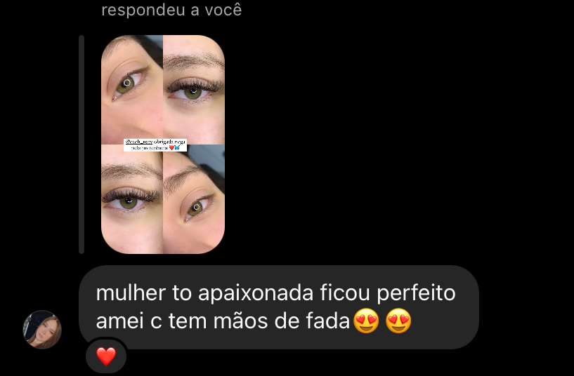

É o fio sintético que tem um formato de “Y”, que proporciona um visual mais volumoso. Nem exagerado, nem tão discreto, é ideal para quem deseja um meio termo! Duração: 15 a 20 dias
SOBRE
A extensão de cílios é uma maneira eficaz e transformadora de elevar a autoestima de qualquer mulher. Proporciona um olhar deslumbrante, economiza tempo e esforço na rotina de beleza e, acima de tudo, aumenta a confiança pessoal.
VARIEDADES
Brasileiro

O volume russo é um procedimento que montamos na hora em formato de leque, proporcionando um visual mais volumoso e sofisticado. São utilizados de 3 a 7 fios na montagem para a colocação em um único fio. Duração de 15 a 20 dias
Light

Esse cílios é indicado para quem gosta de um olhar mais preenchido mais sem perder a sua naturalidade, pois os fios são finos e sofisticados! Duração de 15 a 20 dias
O efeito Glamour deixa o olhar mais preenchido, delicado, leve e volumoso! Ele consiste em 5 fios entrelaçados em uma mesma base. Duração de 15 a 20 dias
Tem como principal característica serem 3 fios em 1! Deixam o olhar preenchido, delicado e apaixonante. Duração de 15 a 20 dias.
CLIENTES
